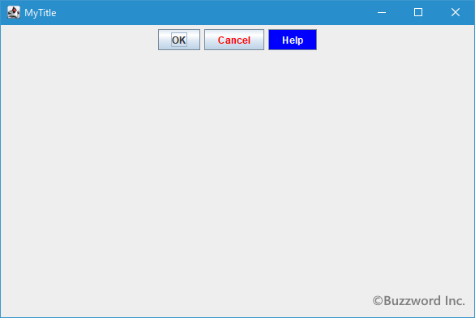
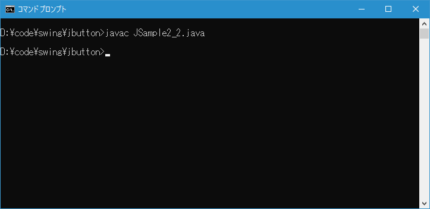
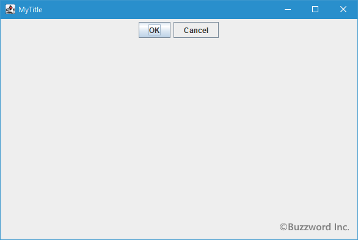

ボタンの前景色/背景色の設定と背景の透明/非透明の切り替え
ボタンに表示される文字列の文字の色である前景色とボタンの背景色をそれぞれ個別に設定することができます。またボタンの背景は透明と非透明を切り替えることができます。ここではボタンの前景色/背景色の設定方法、および背景の透明/非透明の切り替え方法について解説します。
前景色と背景色を設定する
ボタンに表示される文字列の文字の色である前景色を設定するには JButton クラスの親クラスである JComponent クラスで用意されている setForeground メソッドを使います。
public void setForeground?(Color fg)
このコンポーネントのフォアグラウンド・カラーを設定します。 このプロパティが受け付けられるかどうかはルック・アンド・フィールしだいであり、無視されることもあります。
オーバーライド:
setForeground 、クラス: Component
パラメータ:
fg - 要求するフォアグラウンドColor
引数には色を表す Color クラスのオブジェクトを指定して下さい。( Color クラスの使い方は「Colorクラス」を参照して下さい)。
実際の使い方は次のようになります。
JButton button = new JButton("OK");
button.setForeground(Color.RED);
ボタンの背景色を設定するには JButton クラスの親クラスである JComponent クラスで用意されている setBackground メソッドを使います。
public void setBackground?(Color bg)
このコンポーネントのバックグラウンド・カラーを設定します。 バックグラウンド・カラーは、コンポーネントが不透明である場合にのみ、JComponentまたはComponentUIの実装のサブクラスによってのみ使用されます。 JComponentの直接のサブクラスは、このプロパティを受け付けるためにpaintComponentをオーバーライドする必要があります。
このプロパティが受け付けられるかどうかはルック・アンド・フィールしだいであり、無視されることもあります。
オーバーライド:
setBackground 、クラス: Component
パラメータ:
bg - 要求するバックグラウンドColor
引数には前景色と同じく色を表す Color クラスのオブジェクトを指定して下さい。
実際の使い方は次のようになります。
JButton button = new JButton("OK");
button.setBackground(Color.GREEN);
ボタンの背景はデフォルトで非透明に設定されていますので、背景色を設定すれば反映されます。
サンプルプログラム
それでは簡単なサンプルプログラムを作って試してみます。テキストエディタで次のように記述したあと、 JSample2_1.java という名前で保存します。
import javax.swing.JFrame;
import javax.swing.JButton;
import javax.swing.JPanel;
import java.awt.Container;
import java.awt.BorderLayout;
import java.awt.Color;
class JSample2_1 extends JFrame{
public static void main(String args[]){
JSample2_1 frame = new JSample2_1("MyTitle");
frame.setVisible(true);
}
JSample2_1(String title){
setTitle(title);
setBounds(100, 100, 600, 400);
setDefaultCloseOperation(JFrame.EXIT_ON_CLOSE);
JButton button1 = new JButton("OK");
JButton button2 = new JButton("Cancel");
button2.setForeground(Color.RED);
JButton button3 = new JButton("Help");
button3.setForeground(Color.WHITE);
button3.setBackground(Color.BLUE);
JPanel p = new JPanel();
p.add(button1);
p.add(button2);
p.add(button3);
Container contentPane = getContentPane();
contentPane.add(p, BorderLayout.CENTER);
}
}
次のようにコンパイルを行います。
javac JSample2_1.java
コンパイルが終わりましたら実行します。
java JSample2_1
ボタンを 3 つ追加しました。 1 つ目のボタンはデフォルトのまま、 2 つ目のボタンは前景色を赤色に設定しています。 3 つ目のボタンは前景色を白色に背景色を青色に設定しています。

ボタンの前景色および背景色を変更することができました。
背景の透明と非透明を切り替える
ボタンはデフォルトの設定で背景が非透明に設定されていますが透明に設定することも可能です。ただしラベルやテキストフィールドとは異なり、ボタンの背景を透明にするにはコンテンツエリアの描画を行わない設定を行います。
ボタンのコンテンツエリアの描画の設定をするには JButton クラスの親クラスである AbstractButton クラスで用意されている setContentAreaFilled メソッドを使います。
public void setContentAreaFilled?(boolean b)
contentAreaFilledプロパティを設定します。 trueの場合、ボタンのコンテンツ領域がペイントされます。 たとえばアイコンだけのボタンのように、透過ボタンにする場合はfalseに設定するようにしてください。 setOpaque(false)の呼出しは行いません。 contentAreaFilledプロパティのデフォルト値はtrueです。
この関数は、コンポーネントの透過プロパティを変更する可能性があります。
この関数を呼び出した場合の正確な動作は、コンポーネントごとおよびL&Fごとに異なります。
パラメータ:
b - trueの場合はコンテンツが塗りつぶされ、falseの場合はコンテンツ領域は塗りつぶされない
引数にはコンテンツエリアを描画するかどうかを表す boolean 型の値を設定します。 true を指定した場合はコンテンツエリアが描画され、 fales を設定した場合はコンテンツエリアを描画しません。背景を透明にする場合は false を指定してください。
実際の使い方は次のようになります。
JButton button = new JButton("OK");
button.setContentAreaFilled(false);
デフォルトのボタンでは isOpaque メソッドを使って透明かどうかを調べると不透明を表す true を返しますが setContentAreaFilled メソッドに false を指定して実行した後で再度 isOpaque メソッドを使って調べると透明を表す false を返します。
サンプルプログラム
それでは簡単なサンプルプログラムを作って試してみます。テキストエディタで次のように記述したあと、 JSample2_2.java という名前で保存します。
import javax.swing.JFrame;
import javax.swing.JButton;
import javax.swing.JPanel;
import java.awt.Container;
import java.awt.BorderLayout;
class JSample2_2 extends JFrame{
public static void main(String args[]){
JSample2_2 frame = new JSample2_2("MyTitle");
frame.setVisible(true);
}
JSample2_2(String title){
setTitle(title);
setBounds(100, 100, 600, 400);
setDefaultCloseOperation(JFrame.EXIT_ON_CLOSE);
JButton button1 = new JButton("OK");
JButton button2 = new JButton("Cancel");
button2.setContentAreaFilled(false);
JPanel p = new JPanel();
p.add(button1);
p.add(button2);
Container contentPane = getContentPane();
contentPane.add(p, BorderLayout.CENTER);
}
}
次のようにコンパイルを行います。
javac JSample2_2.java

コンパイルが終わりましたら実行します。
java JSample2_2
ボタンを 2 つ追加しました。 1 つ目のボタンはデフォルトのまま、 2 つ目のボタンは背景を透明に設定しています。

ボタンの背景を透明に変更することができました。
-- --
ボタンの前景色/背景色の設定方法、および背景の透明/非透明の切り替え方法について解説しました。
( Written by Tatsuo Ikura )

著者 / TATSUO IKURA
初心者～中級者の方を対象としたプログラミング方法や開発環境の構築の解説を行うサイトの運営を行っています。